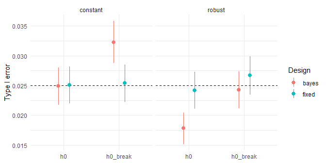

adaptsurv simulates two-arm oncology trials with a time-to-event endpoint and compares an implemented adaptive design with a fixed log-rank design in terms of type I error, power, expected events and duration, including scenarios with non-proportional hazards.
To shorten oncology trials where the beginning of the trial is already conclusive, one can stop early for efficacy or futility. A Bayesian adaptive design with interim analyses allows this, provided that the decision thresholds are adjusted accordingly. In simulations we show a shortening of trials by one fourth with reasonable power loss.
Installation
You can install the development version of adaptsurv from GitHub with:
# install.packages("remotes")
remotes::install_github("adrianwurm/adaptsurv", build_vignettes = TRUE)Example
Simulate one trial with a true hazard ratio of 0.7 and apply both designs:
library(adaptsurv)
set.seed(1)
lambda_c <- log(2) / 12 # control median 12 months
trial <- simulate_trial(n = 400, accrual_time = 24,
rates_c = lambda_c, rates_t = 0.7 * lambda_c,
dropout_rate = 0.005)
run_fixed(trial, n_events = 247)
#> reject hr t_cut n_recruited n_events
#> 1.00000 0.58614 36.43408 400.00000 247.00000
run_bayes_adaptive(trial, c_eff = 0.9918, a0 = 1, b0 = 12 / log(2))
#> reject stop_look stop_futility hr n_events
#> 1.0000000 1.0000000 0.0000000 0.5856029 124.0000000
#> t_cut n_recruited
#> 22.7658790 379.0000000Key result

The plot shows the simulated type I error under two null scenarios: constant hazards (h0) and a hazard that drops after 6 months in both arms (h0_break). The log-rank test keeps its level of 2.5 % in both. The Bayesian design, calibrated under constant hazards (c = 0.9873), also keeps 2.5 % there, but rises to 3.2 % under h0_break, because its exponential working model is then misspecified. Calibrating additionally under h0_break (c = 0.9918) restores the level. The lesson: a simulation-based calibration is only valid under the assumptions it was made under.
Under proportional hazards (HR = 0.7), the adaptive design needs about a quarter fewer events and finishes about 7 months earlier than the fixed design, at the cost of 5 (constant) to 11 (robust) percentage points of power.
Learn more
The vignette describes the designs, the calibration and all scenarios in detail. After installation:
vignette("adaptsurv", package = "adaptsurv")Development note
The package was developed with Claude (Anthropic) as a tutor and coding assistant: package scaffolding, code templates, the vignette skeleton and code reviews were AI-assisted; the implementation of the statistical core, the simulations and their interpretation are my own.
License
MIT, see LICENSE.md.